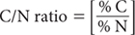

The rate of decomposition of soil OM and the amount of humus formed are related to the soil’s TOC to TSN ratio (C/N ratio). As decomposition of OM typically increases as soil C/N ratios decrease, the ratio of these two essential elements is recognised as a useful index of soil fertility (e.g. Owen et al. 1950; Jones and Parsons 1970; Post and Mann 1990; Knops and Tilman 2000). It follows that the C/N ratio of OM added to moist soil reflects the likely rate of OM decomposition and ultimately whether there is subsequent release (mineralisation) or immobilisation of soil N.
Organic matter breakdown is a complex process. Decomposition involves chemical alteration of OM, physical fragmentation and finally release of mineral nutrients. This process is facilitated by soil biota, including micro-organisms and earthworms, which are influenced by the amount of N present. Soil microbes that attack OM have a C/N ratio of ≈8:1.
Organic compounds readily decomposed by soil micro-organisms include amino acids and simple sugars. Cellulose, phenols, waxes and lignins resist decomposition, so remain for longer times and often accumulate in soils with wide C/N ratios.
Very high C/N ratios (>25–30) indicate OM accumulation is occurring or has occurred faster than decomposition. These high ratios are observed in peats and forest litters. Ligneous tissue of trees can have a C/N ratio up to ≈1000:1. Soil C/N ratios from ≈12–16 suggest OM is well broken down. Good cropping soils usually have a C/N ratio of 10–12. Ratios below 10 and as close as 5:1 are normally confined to subsoils containing ‘fixed’ non-exchangeable NH4+ (Cooke 1967), or may reflect very heavy fertilisation with N and/or inputs of N-rich materials such as poultry manure. For further information, see Brady (1990) and Millar and Donahue (1990).
Because reported soil concentrations of TOC (%C) and TSN (%N) are influenced by the methods employed, apparent C/N ratios, which are calculated on a weight rather than an equivalence basis, will also be affected. For this reason, it is important to give details of the analytical methods employed in the calculation of C/N ratio. Measurement uncertainty is a function of how well the C and N methods are analysed. It is usual to report C/N ratios as whole numbers or at most to one decimal place, without units. Summary details on each method are provided in Table 8.1.
Table 8.1. Summary detaÕs of laboratory and field methods described in this chapter.
Code |
Technology |
Test method |
Notes |
8A1 |
Calculation based on use of specified C and N methods |
Total organic carbon/total nitrogen ratio |
Best estimate of C/N ratio, subject to the quality of input data. |
8B1 |
|
Organic carbon – Walkley & Black (W&B)/total nitrogen ratio |
Approximate estimate of C/N ratio, subject to the quality of input data. |
Express TOC as % C, determined by Method 6B1, Method 6B3 or – if elemental C and carbonates are absent or insignificant – Methods 6B2a, 6B2b, or 6B4, and TSN as % N, from an appropriate method (Method 7A1 to 7A6) for the same profile segment, each on an oven-dry basis.

Report C/N ratio on an oven-dry basis noting method codes involved for both % C and % N.
Express % C – W&B, determined by Method 6A1 and TSN as % N, from an appropriate method (Method 7A1 to 7A6) for the same profile segment, each on an oven-dry basis.
Report C – W&B/N ratio on an oven-dry basis noting the method code for % N.
Brady NC (1990) The Nature and Properties of Soils 10th Edn. Macmillan, New York.
Cooke GW (1967) Nitrogen. In The Control of Soil Fertility. pp. 3–13. Hafner Publishing Co., New York.
Jones MJ and Parsons JW (1970) The influence of C/N ratios on nitrogen mineralization during anerobic incubation. Plant and Soil 32, 258–262.
Knops JMH and Tilman D (2000) Dynamics of soil nitrogen and carbon accumulation for 61 years after agricultural abandonment. Ecology 81, 88–98.
Miller RW and Donahue RL (1990) Organic matter and container media. In Soils: An Introduction to Plant Growth 6th Edn. pp. 181–225. Prentice Hall, Englewood Cliffs, NJ, USA.
Owen O, Winsor GW and Long MIE (1950) Effect of carbon/nitrogen ratio upon the formation of nitrate and ammonia from amino-acids in soil. Nature 166, 152.
Post WM and Mann LK (1990) Changes in soil organic carbon and nitrogen as a result of cultivation, Extended Abstract 19.6. In Soils and the Greenhouse Effect: The Present Status and Future Trends Concerning the Effect of Soils and Their Cover on the Fluxes of Greenhouse Gas. (Ed AF Bouwman) pp. 401–406. John Wiley & Sons Ltd, USA.